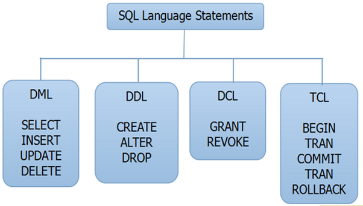

Sql statements

Referential integrity
Referential integrity refers to the relationship between tables. ... Referential integrity
is the logical dependency of a foreign key on a primary key. The integrity of a
row that contains a foreign key depends on the integrity of the row that it references—the
row that contains the matching primary key
Foreign key
Referential integrity refers to the relationship between tables. ... Referential integrity is
the logical dependency of a foreign key on a primary key. The integrity of a row that contains a
foreign key depends on the integrity of the row that it references—the row that contains the
matching primary key
Binary Search
Search a sorted array by repeatedly dividing the search interval in half. Begin with an
interval covering the whole array
Stack applications
Expression Evaluation.
Expression Conversion.
i. Infix to Postfix.
ii. Infix to Prefix.
iii. Postfix to Infix.
iv. Prefix to Infix.
Backtracking.
Memory Management.
OOP concepts
abstraction, encapsulation, inheritance, and polymorphism.
Diff between C and C++
C++ is an object oriented programming language, and C is not. C++ is also a procedural language,
and so is C.
Testing in software engineering
Testing is the process of executing a program with the aim of finding errors. To make our software
perform well it should be error-free
Accessibility testing.
Acceptance testing.
Black box testing.
End-to-end testing.
Functional testing.
Interactive testing.
Integration testing.
Load testing.
Travelling salesman problem
Given a list of cities and the distances between each pair of cities, what is the shortest possible
route that visits each city exactly once and returns to the origin city?
NFA and DFA
DFA stands for Deterministic Finite Automata. NFA stands for Nondeterministic Finite Automata. ...
In DFA, the next possible state is distinctly set. In NFA, each pair of state and input symbol can
have many possible next states
Pushdown Automata
Pushdown automata to recognize Context Free Languages. ... In a given state, PDA will read input
symbol and stack symbol (top of the stack) and move to a new state and change the symbol of stack.
Interrupt handling mechanism
An interrupt handler is just a routine containing a sequence of operations. Each of these may
request input and output while running.
DMA
Direct memory access (DMA) is a method that allows an input/output (I/O) device to send or
receive data directly to or from the main memory, bypassing the CPU to speed up memory operations.
Different addressing scheme
Immediate addressing mode
Example: MOV AL, 35H
Register mode:
Example: MOV AX,CX (move the contents of CX register to AX register)
Register Indirect mode:
MOV AX, [BX](move the contents of memory locationsaddressed by the re
Indexed addressing mode:
Example:MOV AX, [SI +05]
Peterson solution application
Peterson's algorithm (or Peterson's solution) is a concurrent programming algorithm
for mutual exclusion that allows two or more processes to share a single-use
resource without conflict, using only shared memory for communication.
Bankers algorithm
The banker’s algorithm is a resource allocation and deadlock avoidance algorithm
that tests for safety by simulating the allocation for predetermined maximum possible
amounts of all resources, then makes an “s-state” check to test for possible activities,
before deciding whether allocation should be allowed to continue.
What are deadlock avoidance algorithms
One instance of a resources type – To use a Resource Allocation Graph
Several instance of a resources type – To use Banker’s Algorithm
Semaphore in Os
semaphore is a variable or abstract data type used to control access to a common
resource by multiple processes and avoid critical section problems in a concurrent
system such as a multitasking operating system
There are two types of semaphores:
Binary Semaphores: In Binary semaphores, the value of the semaphore variable
will be 0 or 1.
Counting Semaphores: In Counting semaphores, firstly, the semaphore variable is
initialized with the number of resources available.
Serialization - Definition
Serialization is a mechanism of converting the state of an object into a byte stream.
Flipflop
Flip-flop is a circuit that maintains a state until directed by input to change the
state. A basic flip-flop can be constructed using four-NAND or four-NOR gates
Eg:D,SR,JK,T
tcl commands
COMMIT, ROLLBACK and SAVEPOINT
daisy chain model
The daisy-chaining method involves connecting all the devices that can request an
interrupt in a serial manner. This configuration is governed by the priority of the
devices. The device with the highest priority is placed first followed by the
second highest priority device and so on.
stack and queue
stack is a conceptual structure consisting of a set of homogeneous elements
and is based on the principle of last in first out (LIFO)
PUSH Operation.
POP Operation.
Queues are based on the FIFO principle
Enqueue: Add an element to the end of the queue.
Dequeue: Remove an element from the front of the queue.
Interupts
An interrupt is a signal to the processor emitted by hardware or software
indicating an event that needs immediate attention. Whenever an interrupt
occurs, the controller completes the execution of the current instruction
and starts the execution of an Interrupt Service Routine (ISR) or Interrupt Handler
tree operations
Insertion, deletion and searching
sorting algorithms
Quick Sort
Bubble Sort.
Merge Sort.
Heap Sort.
heap sort
Heap sort is a comparison-based sorting technique based on Binary
Heap data structure. It is similar to selection sort where we first
find the minimum element and place the minimum element at the beginning.